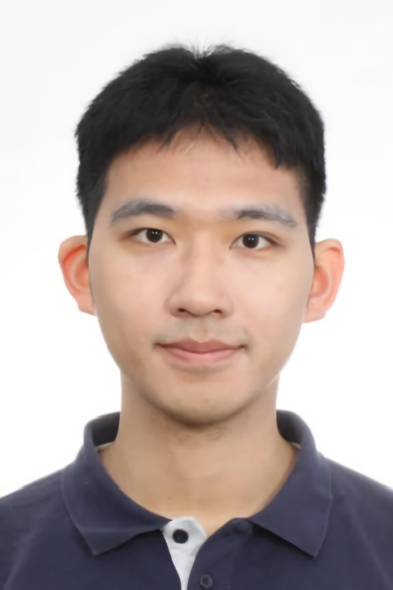

|
Zhiwei Bai (白志威)
|
 |
Ph.D. Student,
School of Mathematical Sciences,
Institute of Natural Sciences,
Shanghai Jiao Tong University,
Shanghai, China
E-mail: bai299@sjtu.edu.cn
|
About Me
I am currently a doctoral candidate at the School of Mathematical Sciences and the Institute of Natural Sciences, Shanghai Jiao Tong University, where I am pursuing a Ph.D. in Mathematics. My academic journey began at Shanghai Jiao Tong University, where I graduated with a B.S. in Mathematics and Applied Mathematics in 2022, as a distinguished member of the Wu Wenjun Honor Class.
Under the mentorship of Professors Yaoyu Zhang and Zhi-Qin John Xu, my research primarily delves into the theoretical underpinnings of machine learning and deep learning. My work is driven by a deep curiosity about the mathematical and foundational principles underlying modern artificial intelligence, with a particular focus on understanding the complexities of deep learning models through a phenomenon-driven approach. I am especially interested in exploring the dynamics of loss landscapes, the principles of implicit regularization, and the theoretical understanding of large language models.
Research Interests
My research areas include:
Current Works
Analysis of Loss Landscapes in Deep Neural Networks Theory of Optimistic Estimation for Nonlinear Models Implicit Regularization in Matrix Factorization Models Self-Adjoint Functors in the Category of Nilpotent Morphisms
Recent Publications
Zhiwei Bai, Tao Luo, Zhi-Qin John Xu*, Yaoyu Zhang*, "Embedding Principle in Depth for the Loss Landscape Analysis of Deep Neural Networks," CSIAM Transactions on Applied Mathematics, 2024. [pdf] and on [arXiv] Zhiwei Bai, Jiajie Zhao, Yaoyu Zhang*, "Connectivity Shapes Implicit Regularization in Matrix Factorization Models for Matrix Completion," Neural Information Processing Systems(NeurIPS), 2024. [pdf] and on [arXiv] Zhiwei Bai, Xiang Cao, Songtao Mao, Han Zhang, Yuehui Zhang*, "Nilpotent Category of Abelian Categories and Self-Adjoint Functors," Frontiers of Mathematics, 2023. [pdf] and on [arXiv] Yaoyu Zhang*, Zhongwang Zhang, Leyang Zhang, Zhiwei Bai, Tao Luo, Zhi-Qin John Xu, "Linear Stability Hypothesis and Rank Stratification for Nonlinear Models," arXiv:2211.11623, 2022. [pdf] and on [arXiv] Yaoyu Zhang*, Zhongwang Zhang, Leyang Zhang, Zhiwei Bai, Tao Luo, Zhi-Qin John Xu, "Optimistic Estimate Uncovers the Potential of Nonlinear Models," arXiv:2307.08921, 2023. [pdf] and on [arXiv] Yaoyu Zhang*, Zhongwang Zhang, Leyang Zhang, Zhiwei Bai, "Local Linear Recovery Guarantee of Deep Neural Networks at Overparameterization," arXiv:2406.18035, 2024. [pdf] and on [arXiv] Jiajie Zhao, Zhiwei Bai, Yaoyu Zhang*, "Disentangling Sample Size and Initialization Effects on Perfect Generalization for Single-Neuron Targets," arXiv:2405.13787, 2024. [pdf] and on [arXiv]
Note: * indicates the corresponding author.
Full list of publications on Google Scholar.
Projects
Academic Service
Academic Conferences
Presented a talk titled "Embedding Principle in Depth for the Loss Landscape Analysis of Deep Neural Networks" at the 2024 Scientific Machine Learning Conference (CSML2024), Shanghai, China, August 2024. Volunteer Manager for the 2024 Scientific Machine Learning Conference (CSML2024) [CSML2024]. Presented a talk titled "Embedding Principle in Depth for the Loss Landscape Analysis of Deep Neural Networks" at the 2023 Machine Learning and Materials Science Workshop, Shanghai, China, July 2023.
Teaching
Fall 2024: Teaching Assistant, Mathematical Analysis, Shanghai Jiao Tong University Zhiyuan Honors Program. Spring 2024: Teaching Assistant, Mathematical Analysis, Shanghai Jiao Tong University Zhiyuan Honors Program. Fall 2023: Teaching Assistant, Mathematical Analysis, Shanghai Jiao Tong University Zhiyuan Honors Program. Spring 2023: Teaching Assistant, Mathematical Analysis, Shanghai Jiao Tong University Zhiyuan Honors Program. Fall 2022: Teaching Assistant, Mathematical Analysis, Shanghai Jiao Tong University Zhiyuan Honors Program.
Education
2022–present, Ph.D. in Mathematics, School of Mathematical Sciences, Shanghai Jiao Tong University, China.
2018–2022, B.S. in Mathematics and Applied Mathematics (Wu Wenjun Class), School of Mathematical Sciences, Shanghai Jiao Tong University, China.
2021–2022, Minor in AI+X, a collaborative program offered by: Shanghai Jiao Tong University, Zhejiang University, Fudan University, University of Science and Technology of China, Nanjing University, and Tongji University, China.
Activities
- Peking University Graduate Applied Mathematics Workshop and Summer School, July–August 2023, Peking University, Beijing, China.
- Deep Learning Theory and Application Summer School, July 2023, Shanghai Jiao Tong University, Shanghai, China.
Competitions and Awards
National Scholarship, Ministry of Education of the People's Republic of China, 2021 Shanghai Outstanding Graduate, Shanghai Municipal Education Commission, 2022 Outstanding Bachelor's Degree Thesis(top1%), Shanghai Jiao Tong University, 2022 First Prize, National Undergraduate Mathematical Contest in Modeling, Chinese Society of Industrial and Applied Mathematics, 2020 Second Prize, National Postgraduate Mathematical Contest in Modeling, Chinese Society for Academic Degrees and Postgraduate Education, 2023 Huatai Securities Technology Scholarship, Shanghai Jiao Tong University, 2023 Samsung Scholarship, Shanghai Jiao Tong University, 2020 Third Prize, National College Mathematics Competition, Chinese Mathematical Society, 2019 President, Mathematical Modeling Association, Shanghai Jiao Tong University, 2020–2023
Contact
I am always open to connecting with fellow researchers and enthusiasts in related fields. Feel free to reach out—let’s explore new ideas together!
|